SABAH SAŞE
Sabah için saşe
Enerji ve denge için
- L-Karnitin1.000 mg
- Konjak Glukomannan1.000 mg
- Karamuk Ekstresi200 mg
- Yeşil Çay Ekstresi200 mg
- Taurin200 mg
- L-Tirozin100 mg
- Krom200 mcg
İki ayrı form var: biri sabah, biri akşam için. İçeriği inceleyin
Destek: kargo, iade, sipariş durumu
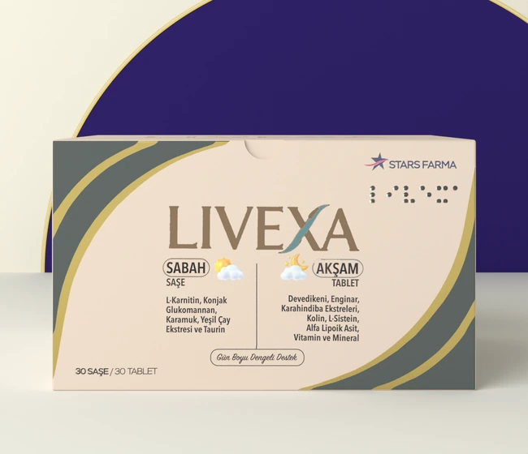
LIVEXA nedir?
LIVEXA bir takviye edici gıdadır. İçinde amino asitler (proteinlerin yapı taşları), bitki ekstreleri, vitaminler ve mineraller bulunur. Bunları iki ayrı formda bir araya getirdik.
Daha fazla bilgiSABAH SAŞE
Enerji ve denge için
AKŞAM TABLET
Karaciğer ve metabolik denge için
Bileşenleri tanıyın
LIVEXA'daki her bileşen, bilimsel araştırmalar ışığında özenle seçilmiştir.
Tüm bileşenleri inceleyin

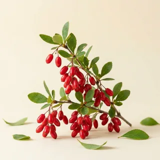

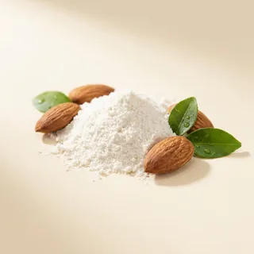
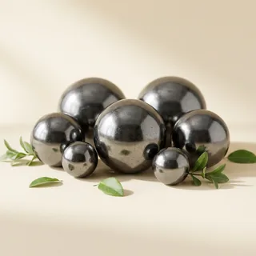

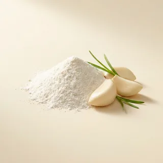


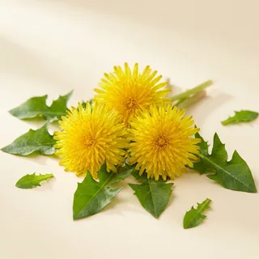
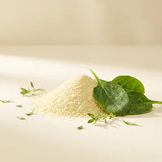
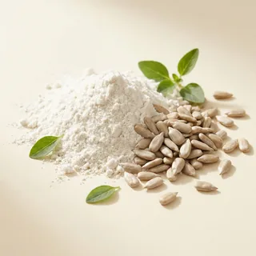

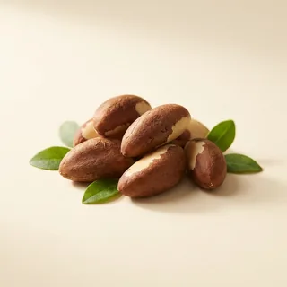
SABAH SAŞE
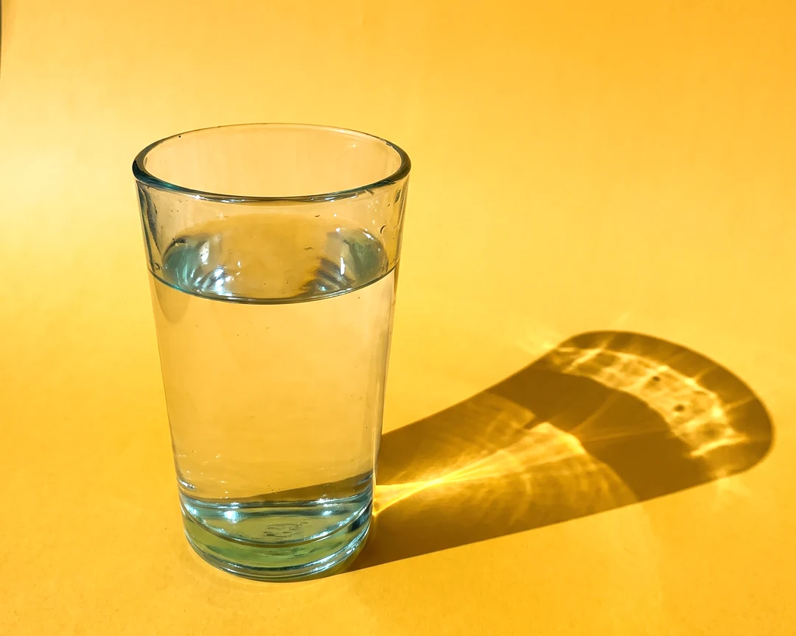
"Takviye edici gıda olarak günde 1 saşenin 1 bardak suya (200ml) karıştırılmasıyla kullanılması önerilir."
AKŞAM TABLET
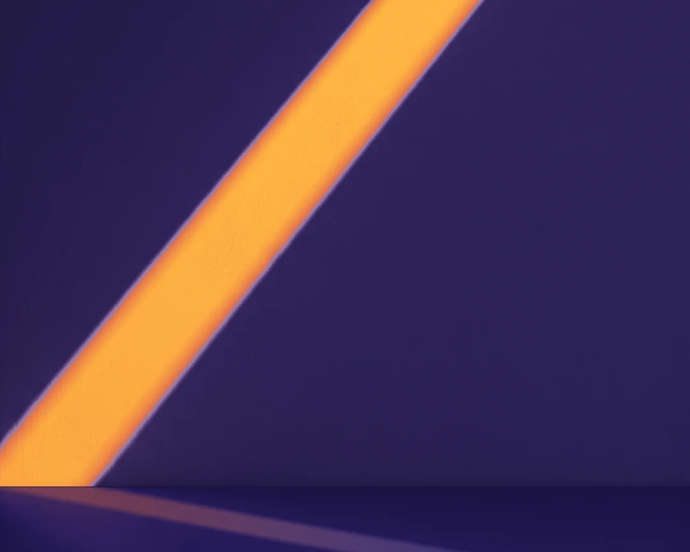
"Takviye edici gıda olarak günde 1 kere 1 tablet kullanılması önerilir."
Ambalajda, günün hangi saatinde ya da hangi öğünde kullanılacağına dair bir talimat yer almıyor.
Günlük porsiyon: 1 saşe + 1 tablet
11 yaş ve üzeri kullanım için uygundur.
Takviye edici gıdadır. İlaç değildir. Hastalıkların önlenmesi veya tedavi edilmesi amacıyla kullanılmaz.
Mutfakta çay, pazarda domates, sahilde yürüyüş.
Sabah
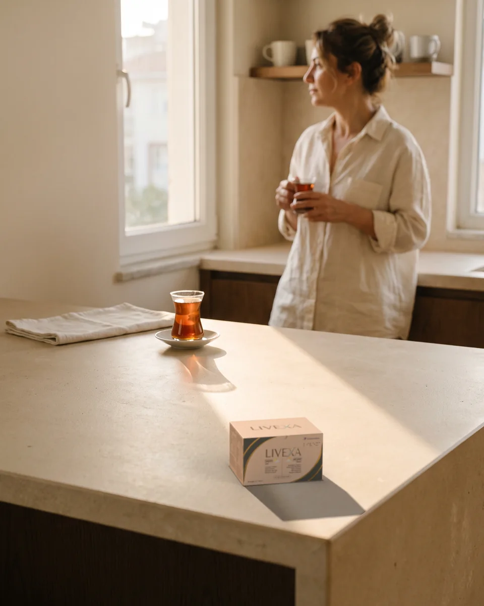
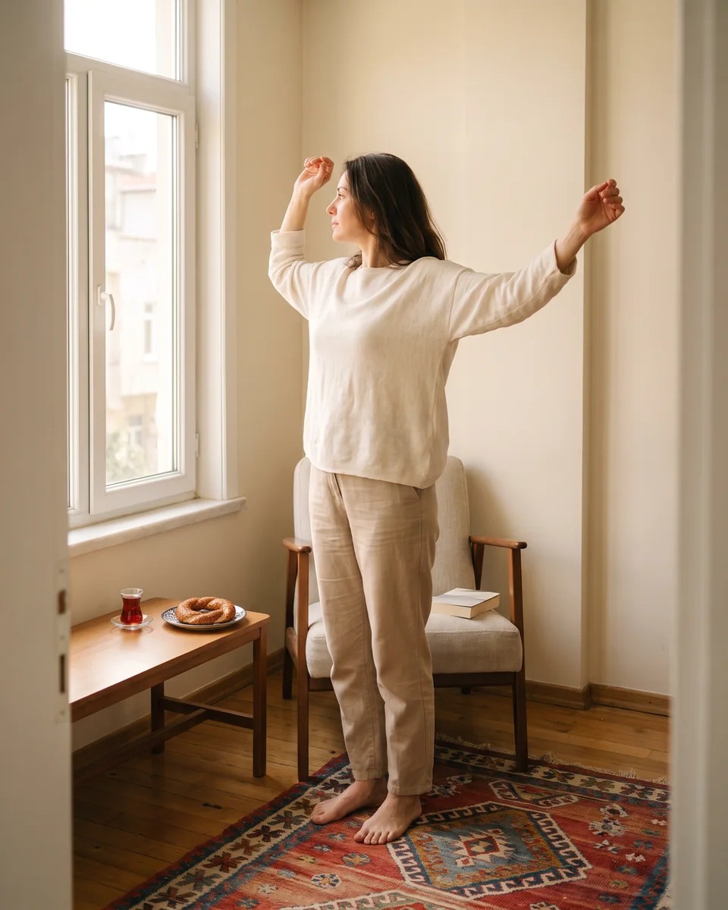
Öğle
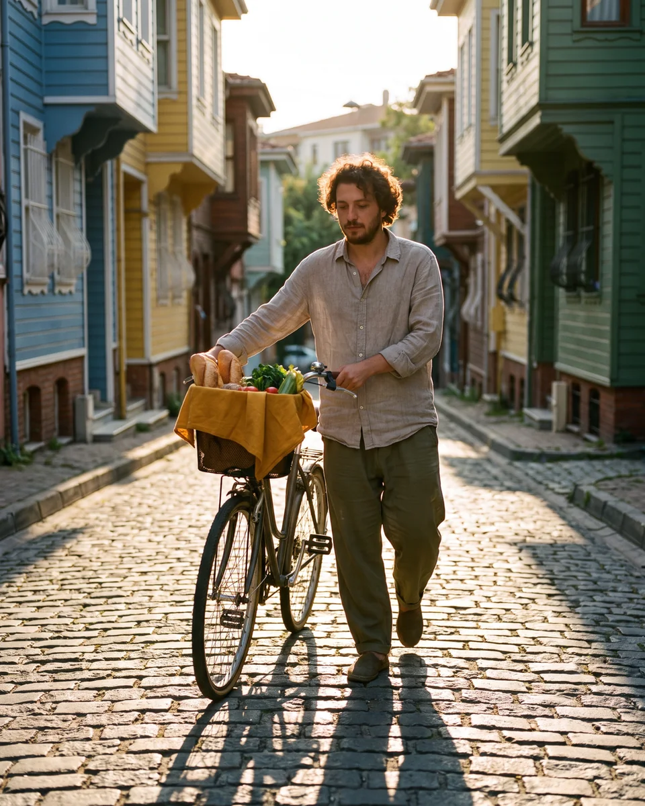
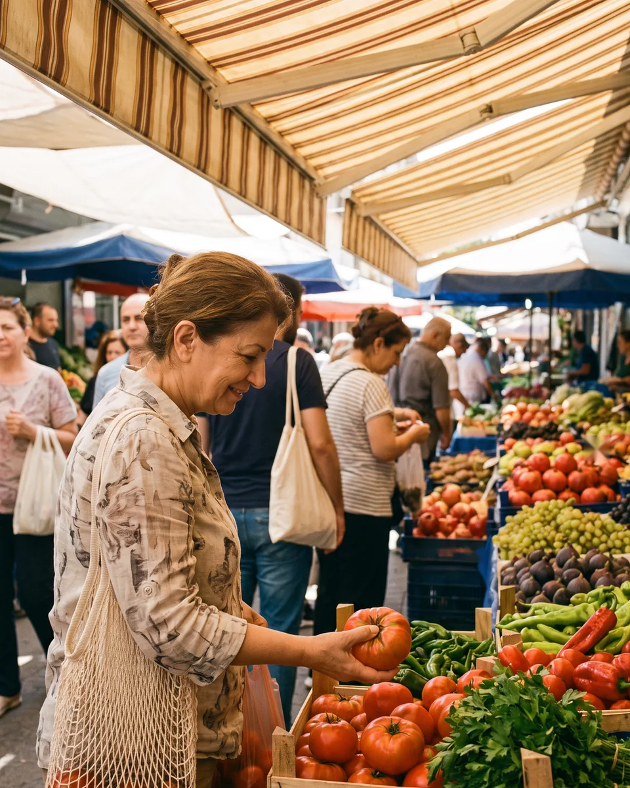
Akşamüstü
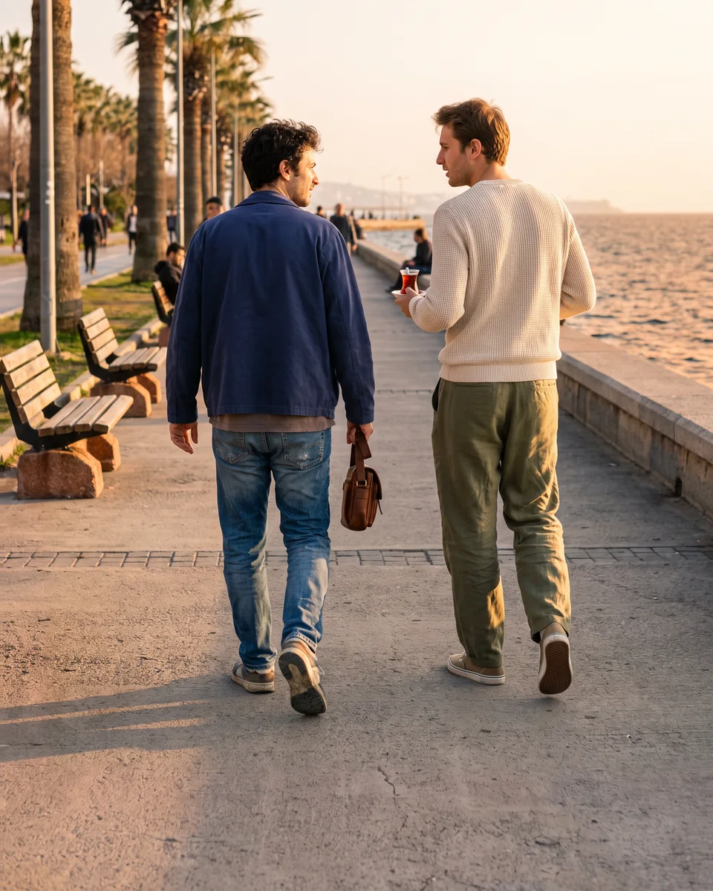
Dengeli ve çeşitli beslenme ile sağlıklı bir yaşam tarzı önemlidir.
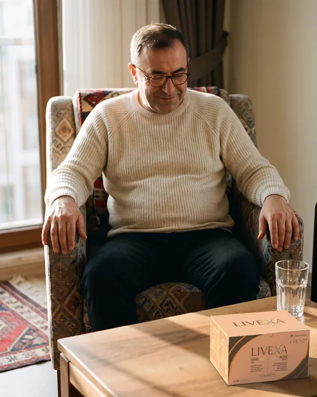
Sabah saşesinde 7, akşam tabletinde 9 etken madde var.
Hepsinin etiketteki adını, bileşen listesini nasıl okuyacağınızı ve günlük kullanımı tek sayfada topladık.
İçerik ve kullanım →Bileşenleri, etiketin nasıl okunduğunu ve sofradan sahneleri Instagram ve Facebook'ta da paylaşıyoruz. Bizi orada da takip edebilirsiniz: Instagram @livexatr (yeni sekmede açılır) · Facebook Livexa (yeni sekmede açılır)
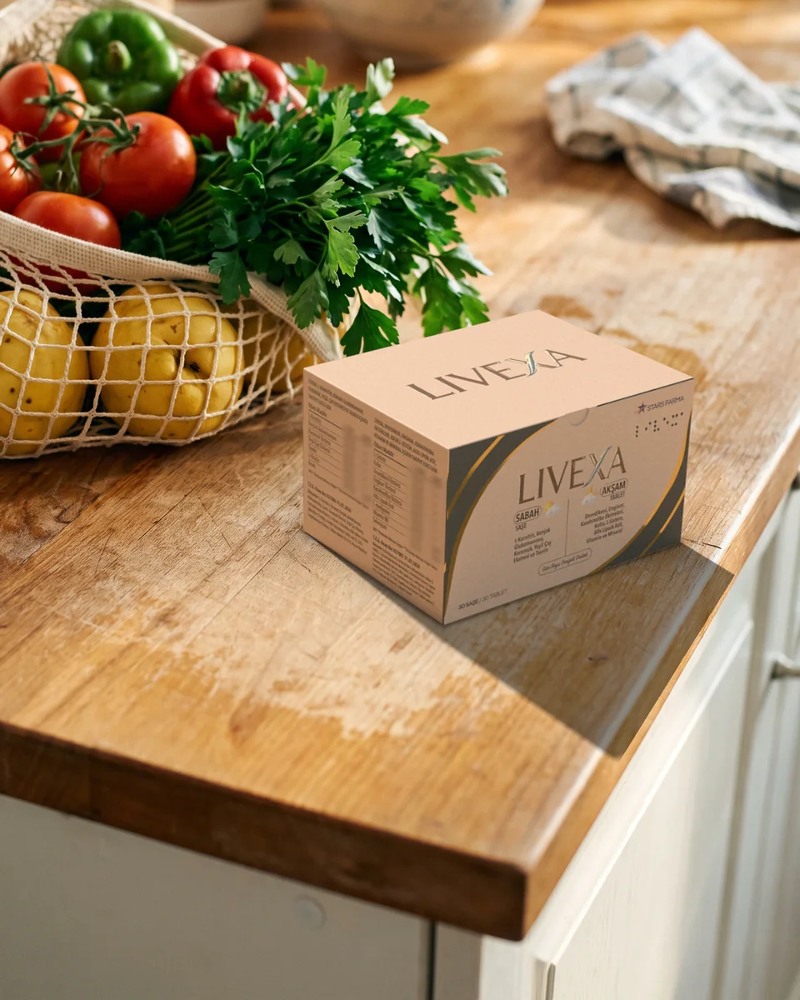
Destek: kargo, iade, sipariş durumu
Destek hattında hafta içi 09:00–18:00 arasında yanıt veriyoruz. Bu hat kargo, iade ve sipariş durumu için. Cayma, iptal ve kişisel veri talepleriniz için lütfen e-posta gönderin. Ürünle ilgili her şey İçerik ve kullanım sayfasında.
Ürün künyesi
| Alan | Değer |
|---|---|
| T.E.G. Onay No — sabah saşe | 027086 · 31.07.2026 |
| T.E.G. Onay No — akşam tablet | 027087 · 31.07.2026 |
| İşletme Kayıt No | TR-06-K-074972 |
| Barkod | 8685119165127 |
| T.E.T.T. ve P.NO | Her kutunun künye panelinde basılıdır |
| İçerik | 30 saşe / 30 tablet |
| Menşe Ülke | Türkiye (Takviye edici gıdanın ana bileşeninin menşei, ürünün menşe ülkesinden farklıdır.) |
| Saklama koşulu | 25 C altında kuru ve serin yerde muhafaza ediniz. |
Ürün sahibi
Stars Farma İlaç Medikal Ticaret Pazarlama Limited Şirketi
Konak Mah. 157.Sok. No:8/3 Yatağan/Muğla
Reklamlarımızın sonuçlarını ölçmek ve reklamlarımızı daha uygun kişilere göstermek için Meta'nın (Facebook, Instagram) pazarlama çerezlerini kullanmak istiyoruz. İzin verirseniz ziyaret ve sipariş bilgileriniz Meta'ya iletilir; vermezseniz site aynı şekilde çalışır.